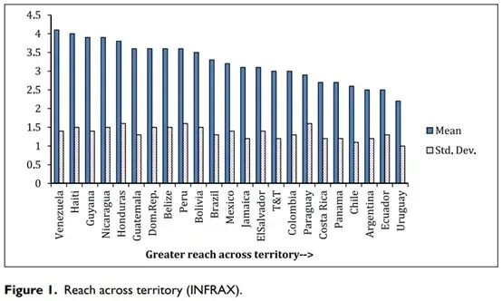
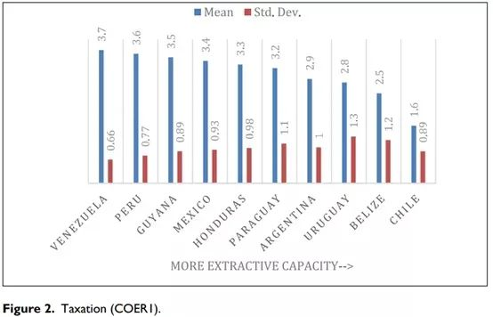
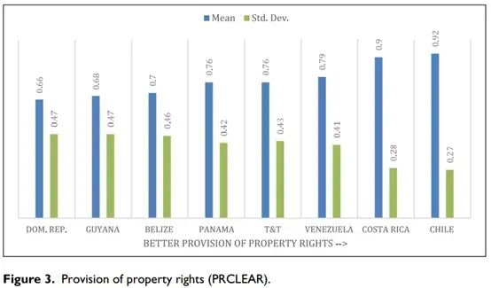
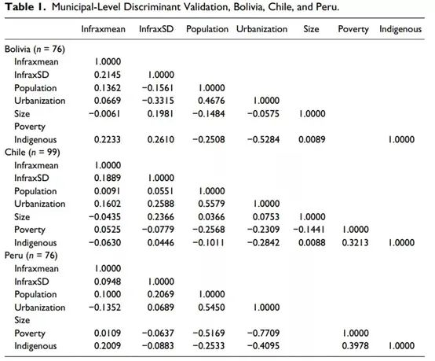
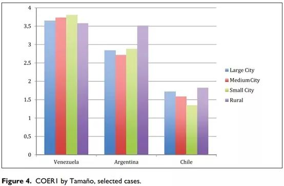
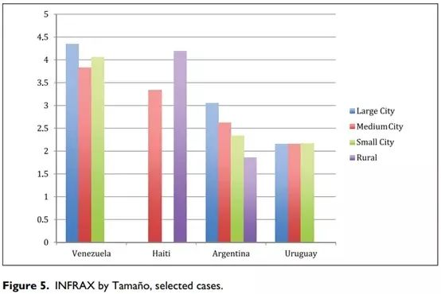
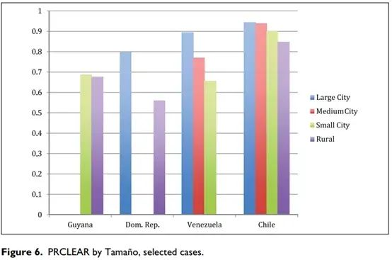

收录于合集
以下文章来源于Politicall理论志 ，作者俊言
 Politicall理论志 .
Politicall理论志 .
搜索“理论志”，发现新学术：七万余社会学人、政治学人、国政学人、政经学人共同关注的学术平台。目前，我们主力追踪国内外社会学、政治学、国际政治与政经济研究新动态。

作品简介
作者： Juan Pablo Luna，智利天主大学政治科学系；Hillel David Soifer，美国天普大学政治科学系
编译： 俊言
来源： Juan Pablo Luna , Hillel David Soifer. Capturing Sub-National Variation in State Capacity:A Survey-Based Approach. American Behavioral Scientist. 2017, Vol. 61(8)
提要： 当前存在的众多国家能力衡量方法中，很少存在能可靠并且有效地捕捉国家能力在次国家层面上的地域差异的。本文提出了一种可以弥补现有方法不足的、基于问卷调查的国家能力测量法，并以当代拉美国家为例进行了运用。作者利用其数据描绘了拉美诸国的国家能力跨国差异和次国家层面差异，进行了一系列关于这一方法测量的国家能力不混淆于其他政治、社会经济因素的检验。作者还列举了这一方法未来的研究应用前景。
引言
在许多发展中国家中，国家能力的重要特征是存在地域差异，即国家权力在领土范围内的渗透是不均匀的，公共物品在各地之间并非能够平等地供给。然而现存的国家能力衡量方法并非为捕捉次国家层面的差异设计，因此研究者很难进一步探究国内地区间的国家能力差异造成的影响。
该研究的目的在于开发新的国家能力衡量方法，弥补学界研究国家工具箱中的这一空白，并且应用于当代拉美国家。作者将国家能力定义为国家有效行使其权威的能力，指出这由国家在其声称统治的领土上执行其选定政策的能力来反映。
后文各部分中，关于方法，作者探讨了现有的国家能力衡量方法存在的局限性，针对性地提出了自己开发的基于访谈调查的衡量方法，并同样评估了其优势和局限性。在实证方面，作者首先在跨国层面应用这一方法，比较了拉美各国的国家能力差异。然后，在检验了这一方法得出的国家能力指标并不受地方社会经济条件和市政能力混淆之后，作者在次国家层面将之应用到了比较拉美各国国家能力的区域差异当中。最后，作者列举了一系列该方法未来的研究发展方向。
述评：旧局限与新方法
01
现有衡量方法述评
当前学界业已存在衡量国家能力的三四十种方法，并且不断涌现新的测量方式。但是作者认为，当前绝大多数方法将国家能力视为一个单纯的国家层次属性有失真实，而且普遍在衡量方式上存在一些基础性的症结。作者指出了当前衡量方法的四种主要症结：
第一，对次国家概念进行国家层面的测量。测量国家能力常用的全国教育水平、税收和警力等指标指出了全国的加总水平，但并无法表现其如何分布到一个个地方和社区中，而比较政治学者关切的往往在于后者。
第二，概念与测量之间的不连贯。当前许多衡量方法无法表现“国家能力”这一复杂而微妙的概念。使用人均地区生产总值或地区夜间灯光亮度指标致使国家能力的测量与经济社会发展水平发生混淆，而识字率、税率等指标又使国家能力与地方行政能力发生混淆。
第三，各国数据质量的差距。众多国际组织提供的关于各国情况的数据实际都是由各国政府自行收集汇报的，这使得数据质量本身就受国家能力和政治激励的制约。一方面，详细可靠的数据收集恰依赖于较强的国家能力，这对众多发展中国家而言并不现实；另一方面，政府官员很有可能出于政治动机虚报本地的统计结果。
第四，数据获取的困难。一方面，有的国家不统计或不公开本国某些领域的数据；另一方面，正常公开的数据的统计周期也都大于一年，很难存在更频繁的统计结果，这使得学者难以探究某国国家能力发生短时剧变的成因。
02
新衡量方法设计
新的国家能力衡量方法不采用国家统计数据或国家能力的其他常用代理变量数据，而是通过对当地居民发放有5道题的问卷调查来测量其在所处地区感受到的国家能力表现出的具体方面。
考量了现有各种衡量方法后，作者将国家能力的测量划分了三个维度：国家抵达能力（the state’s reach across territory）、征税能力（ability to impose taxation）和产权效力（effectiveness in the provision of property rights）。前两个维度分别用受访人预计的警察出警时间、发票提供情况的定序打分来代表，第三个维度使用受访者对房屋、产权和合同三者分别的拥有情况来代表。
新方法尽管可以克服以往衡量方法的弊端，但也存在着自己的缺陷，主要体现在以往数据的无法获得和调查成本的高昂上。
实证：跨国家与次国家方法
01
跨国家比较
针对出警能力（INFRAX）、税收能力（COERI）和产权保障（PRCLEAR），作者分别使用了以往不同调查的结果，在图1至图3中分别给出各国在该问题上的得分均值和标准差。经均值排序后，图片中越靠右侧、均值越低的国家在该项上表现的国家能力越强。
  
02
次国家比较
进行次国家层面比较首先面临的问题是，国家能力在很容易与地方经济社会发展水平、地方行政能力发生混淆。
在经济社会发展水平方面，作者分别检验了玻利维亚、智利、秘鲁三国国家抵达能力与贫困率、原住民、城市化水平及地理特征的水平的相关性，证明其相关性很弱（表1）。
在地方行政能力水平方面，作者认为非相关的检验方法还需进一步探究。
   
排版 | 顾金源
本文来自Politicall理论志公众号，
文章观点不代表本平台观点